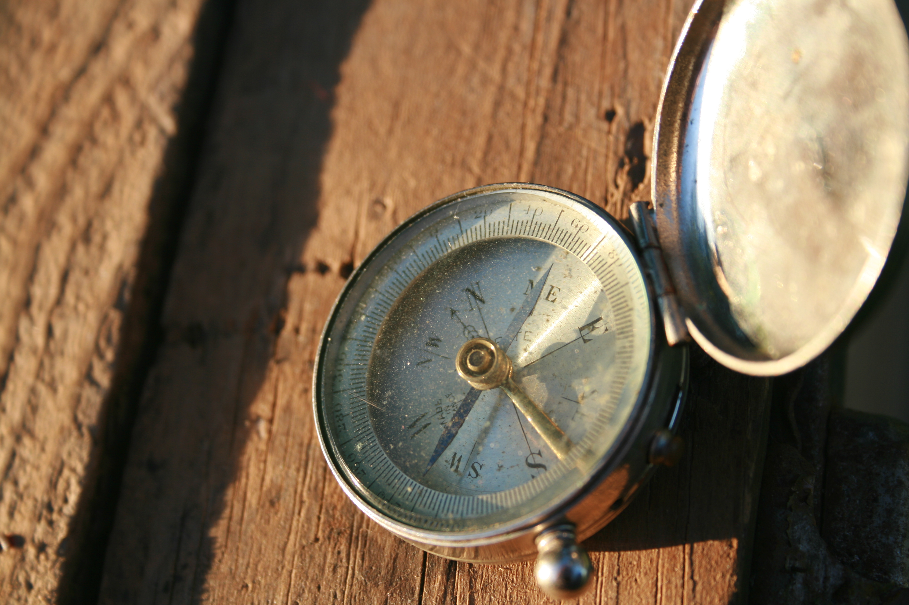
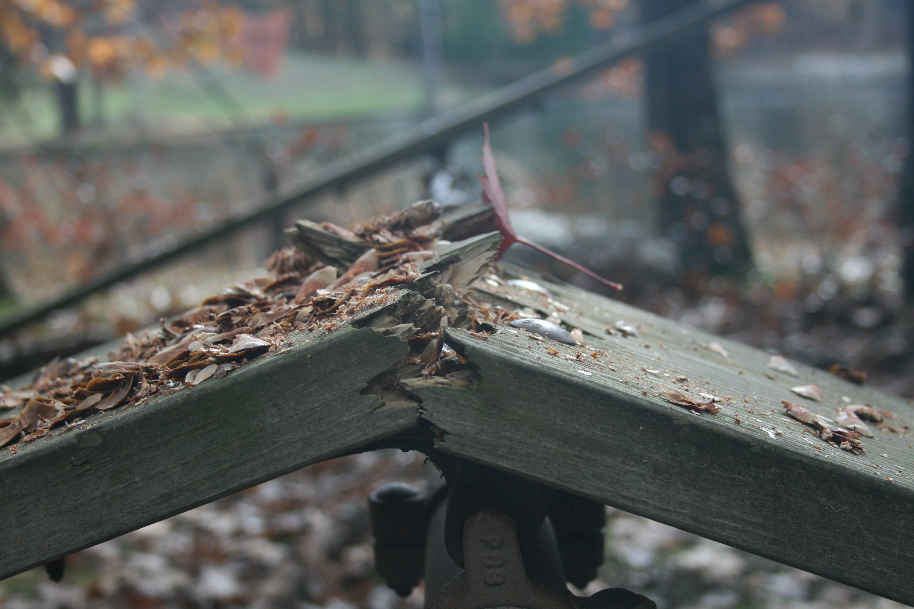
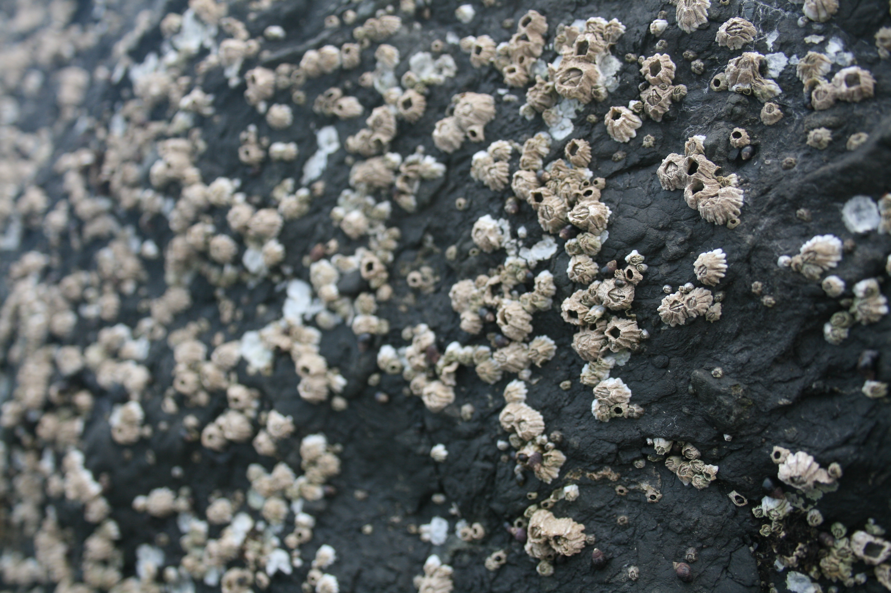

Trust yourself. You've survived a lot, and you'll survive whatever is coming. ~Robert Tew |
I promise you nothing is as chaotic as it seems. Nothing is worth diminishing your health. Nothing is worth poisoning yourself into stress, anxiety, and fear. ~Steve Maraboli |
 | Our anxiety does not come from thinking about the future, but from wanting to control it. ~Kahlil Gibran |
|  | Almost everything will work again if you unplug it for a few minutes...Including you. ~Anne Lamott |
Your mind will answer most questions if you learn to relax and wait for the answer. ~William Burroughs |
Slow down and everything you are chasing will come around and catch you." ~John De Paola |
It's not stress that kills us, it is our reaction to it. ~Selye |
The time to relax is when you don't have time for it. ~Sydney Harris |
The best thing one can do when it is raining, is to let it rain. ~Henry Wadsworth Longfellow |
 |